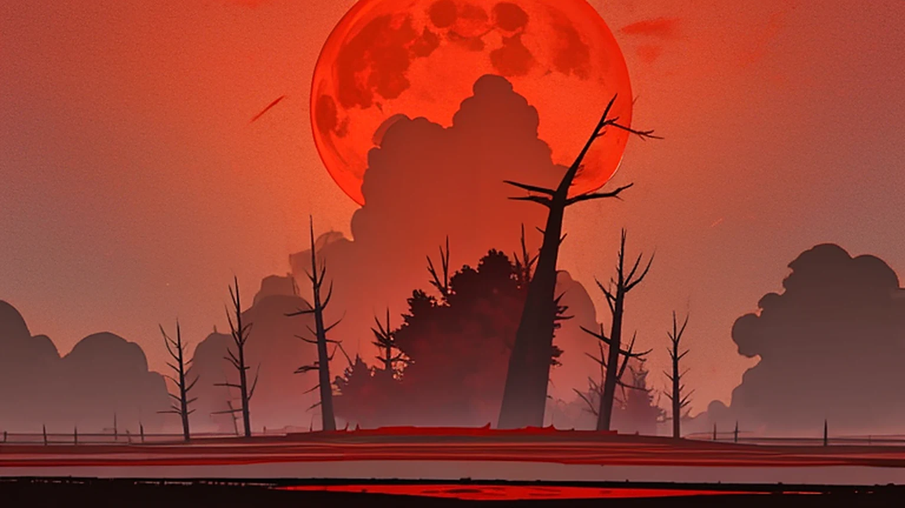
A boy from Tokyo, an axe nobody else could lift, and a man in a black suit who opened the sky on purpose.
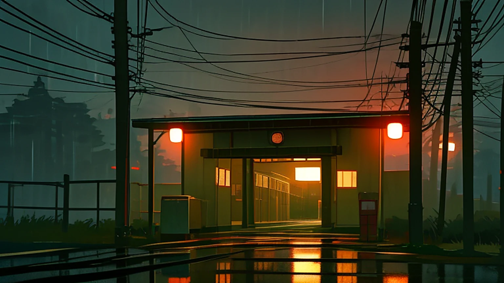
01第一話「踏切」2:14 a.m., Nerima. Takuto is feeding his missing best friend's cat when the sky cracks open over the railway crossing.
24 min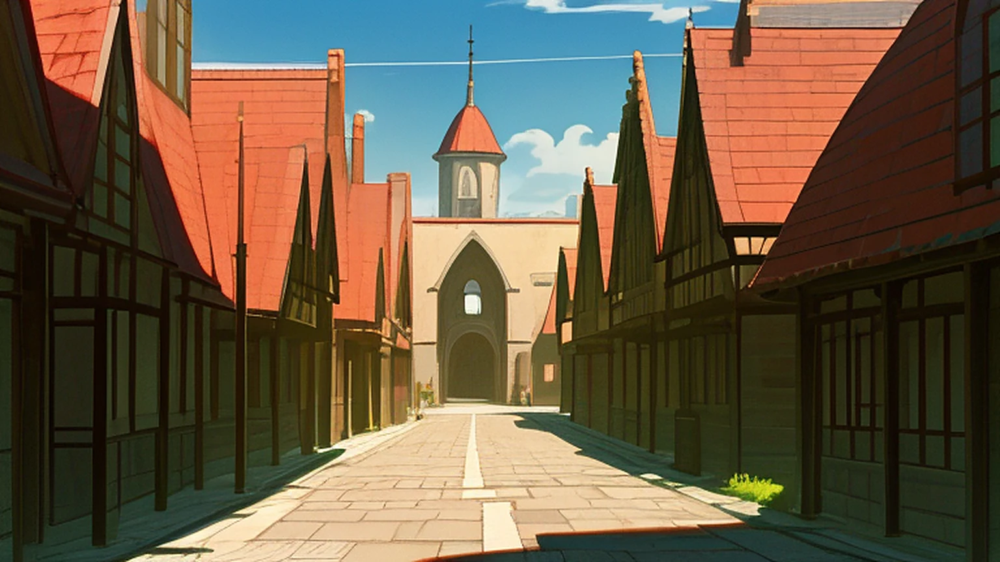
02第二話「烙印」At the Hunters' Guild in Ashford, the appraisal cube reads Takuto's rank as ERROR, and Rin Ashveil challenges him on sight.
24 min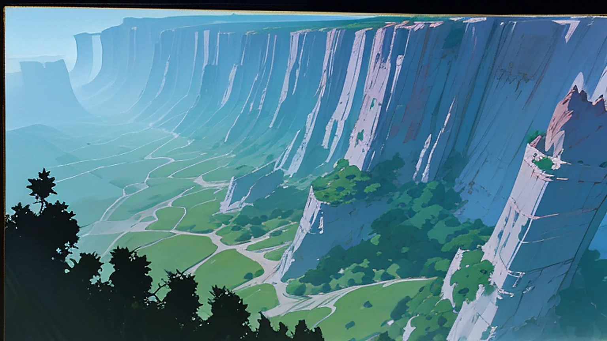
03第三話「故郷の炎」The licensing exam in the Bramble Wastes. Wick, a Skyfallen from Osaka, says nobody has ever gone home. Then the Behemoth wakes.
24 min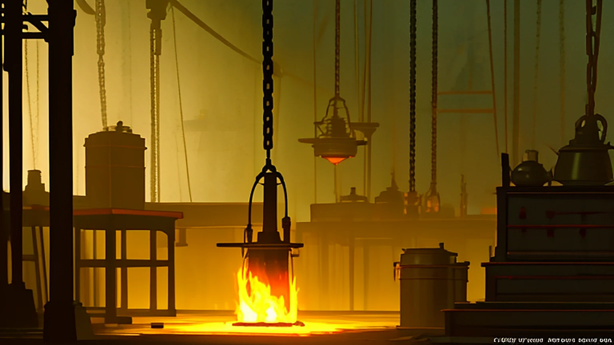
04第四話「歯車の心臓」Gideon builds a harness so the axe can block exactly once. Someone opens a Rift inside the town walls.
24 min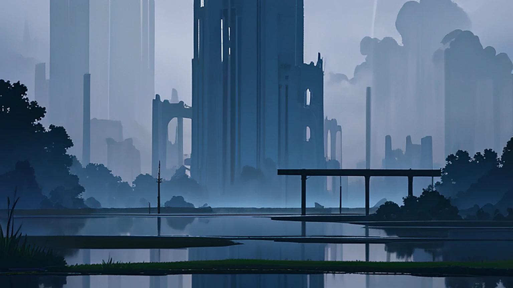
05第五話「七つ首の河」In Marrowmere, the Hydra regrows every head Takuto cuts off, and Rin has to tie herself to the answer.
24 min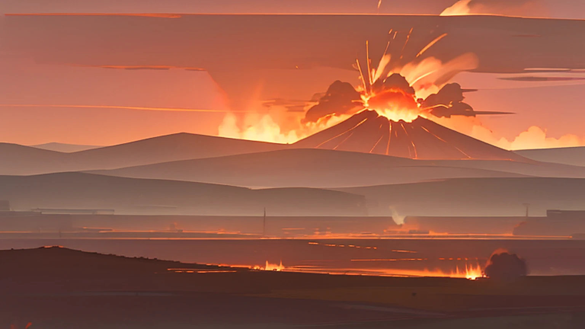
06第六話「赤き巨人の行進」Red Giants march on Fort Cinder in step. Takuto loses control for the first time, and Akuro opens his eye.
24 min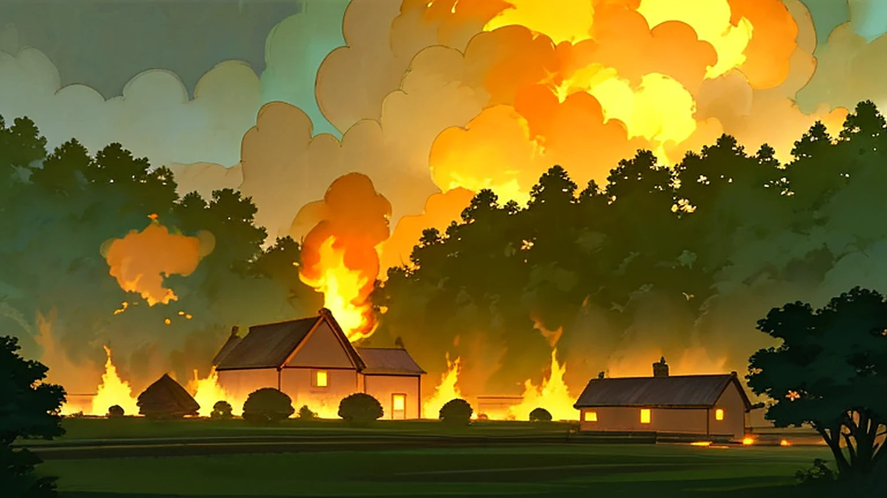
07第七話「羽と灰」Plume Ogres raid a village because they are running from something. Some Fiends can be talked to.
24 min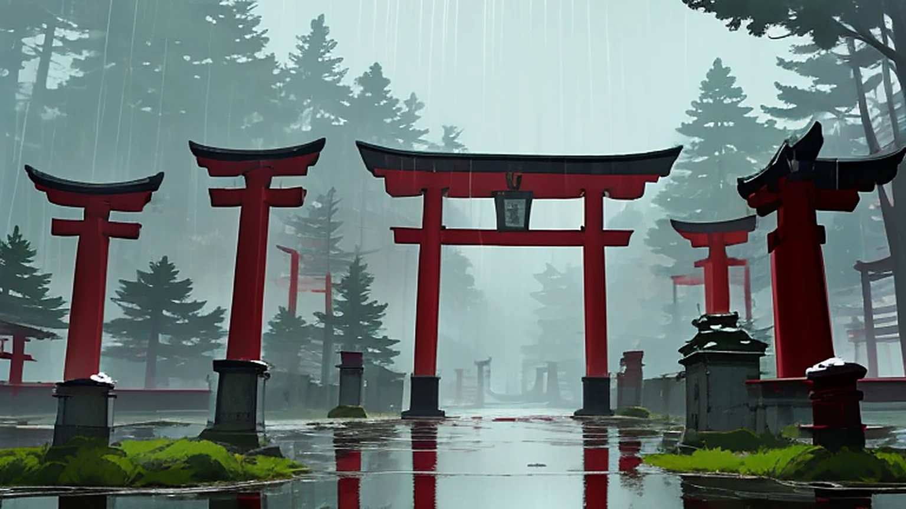
08第八話「牙の浪人」Kurozane challenges Sieg to a duel at the pass shrine, six years after Grey Hollow.
24 min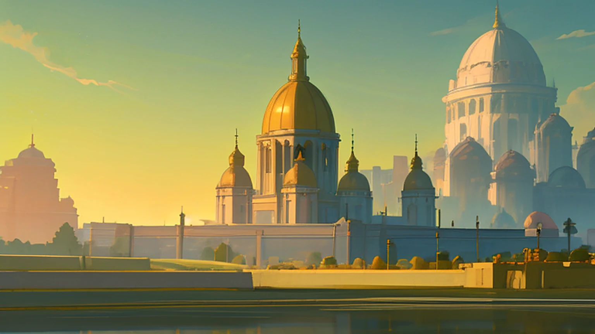
09第九話「聖都ルーメン」The Golden Saint invites Takuto into the Gilded Order. Haruki is at his side, and does not want to be rescued.
24 min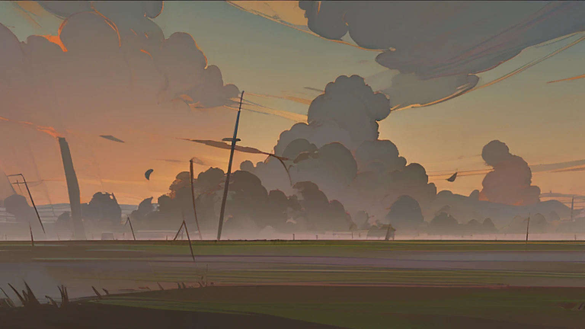
10第十話「モルヴッド」Sieg holds the old stone bridge against a Calamity, and Mr. Sable tells Takuto why he is here.
24 minTyr the Frost Titan comes to Saint Lumen. Takuto lets Akuro out, and Nemu spends her eighth life to reach him.
24 minThe Great Sanctum rises over the city. Haruki gives Takuto three seconds, and a Rift to Earth flickers open.
24 min · Finale